class: center, middle, inverse, title-slide # Statistical Society of Australia<br> Victorian Branch ## March Event ###  ### 30th March 2022 --- layout: true .footnote[ <img style="vertical-align:middle" src='images/logo/other/png_transparent/SSA_Monogram_Navy-White.png' height='40px'/> These slides are available at https://statsocaus.github.io/vic/intro/2022-03-event.html ] --- class: inverse middle # Welcome! --- # Acknowledgement of Country <!-- https://www.statsoc.org.au/Guidelines --> <br><br> .w-70[ We acknowledge that we are on the lands of the Wurundjeri people who have been custodians of this land for thousands of years, and acknowledge and pay our respects to their Elders past and present. ] --- name: council # SSA Vic Council 2021 .flex[ .person.f5[ .circle-image-120[ <img src='images/council/emi.jpeg'>] **President** Emi Tanaka] .person.f5[ .circle-image-120[ <img src='images/council/damjan.jpeg'>] **Vice-President** Damjan Vukcevic] .person.f5[ .circle-image-120[ <img src='images/council/ben.jpeg'>] **Secretary** Ben Harrap] .person.f5[ .circle-image-120[ <img src='images/council/lizzie.jpeg'>] **Treasurer** Elizabeth Korevaar] .person.f5[ .circle-image-120[ <img src='images/council/kevin.jpeg'>] **Communication Officer** Kevin Wang] .person.f5[ .circle-image-120[ <img src='images/council/rheanna.jpg'>] **Membership Officer** Rheanna Mainzer] ] <br> .flex[ .person.f5[ .circle-image-120[ <img src='images/council/cameron.jpeg'>] **ECSS Rep** Cameron Patrick] .person.f5[ .circle-image-120[ <img src='images/council/patrick.jpeg'>] **Industry Rep** Patrick Robotham] .person.f5[ .circle-image-120[ <img src='images/council/lidija.jpeg'>] **Deputy Secretary** Lidija Turkovic] .person.f5[ .circle-image-120[ <img src='images/council/hien.jpeg'>] **Deputy Treasurer** Hien Nguyen] .person.f5[ .circle-image-120[ <img src='images/council/daniel.jpeg'>] **Deputy Communication Officer** Daniel Fryer] .person.f5[ .circle-image-120[ <img src='images/council/lauren.jpg'>] **Deputy Membership Officer** Lauren Kennedy] ] --- name: council # SSA Vic Council 2022 .flex[ .person.f5[ .circle-image-120[ <img src='images/council/emi.jpeg'>] **President** Emi Tanaka] .person.f5[ .circle-image-120[ <img src='images/council/ben.jpeg'>] **Vice-President** Ben Harrap] .person.f5[ .circle-image-120[ <img src='images/council/belinda.jpg'>] Belinda Maher] .person.f5[ .circle-image-120[ <img src='images/council/cameron.jpeg'>] Cameron Patrick] .person.f5[ .circle-image-120[ <img src='images/council/dennis.png'>] Dennis Leung] .person.f5[ .circle-image-120[ <img src='images/council/elena.jpg'>] Elena Tartaglia] ] <br> .flex[ .person.f5[ .circle-image-120[ <img src='images/council/lizzie.jpeg'>] Elizabeth Korevaar] .person.f5[ .circle-image-120[ <img src='images/council/joanne.jpg'>] Joanne Potts] .person.f5[ .circle-image-120[ <img src='images/council/melissa.jpg'>] Melissa Middleton] .person.f5[ .circle-image-120[ <img src='images/council/patrick.jpeg'>] Patrick Robotham] .person.f5[ .circle-image-120[ <img src='images/council/rick.jpg'>] Rick Tankard] .person.f5[ .circle-image-120[ <img src='images/council/swen.jpg'>] Swen Kuh] ] --- name: contact # Statistical Society of Australia <br> .f2.color-secondary[Victorian Branch] .fr.center[ The Great Australian <br>Statisticians T-Shirt <img src="images/ssa-tshirts.png" width="300px"> .f4[[Designed by Ben Harrap](https://benharrap.com/post/2020-12-02-tshirt-competition/)] <i class="fas fa-shopping-cart"></i> .f4[Buy at https://www.statsoc.org.au/SSA-T-Shirt] .f6[Proceeds used to support early career statisticians.] ] .lh-title[ <br> <i class="fa fa-link color-secondary"></i> [www.statsoc.org.au/Victoria](https://www.statsoc.org.au/Victoria) <br> <i class="fa fa-envelope color-secondary"></i> [vic.branch@statsoc.org.au](mailto:vic.branch@statsoc.org.au) <br><i class="fa fa-envelope color-primary"></i> [eo@statsoc.org.au](mailto:eo@statsoc.org.au) <br><Br> <i class="fab fa-twitter color-secondary animated bounce"></i> [@SSAVictoria](https://twitter.com/SsaVictoria) <i class="fab fa-twitter color-primary"></i> [@StatSocAus](https://twitter.com/StatSocAus) <br> <i class="fab fa-meetup color-secondary"></i> [bit.ly/ssavic-meetup](http://bit.ly/ssavic-meetup) ] ??? * You can find how to get in touch here, * in particular, if you want to get in touch with the Victorian Branch, please get in touch using the victorian email address * I also want to remind you that the Society now has a T-shirt, and you can buy this in the link give here with the proceeds going to support early career statisticians --- # Di Cook Award brought to you by the _SSA Victorian Branch_ <img src="images/dicook-2019.png" class="circle-image-120 absolute top-2 right-3"> <br> .w-85[ * This is an **open-source statistical software award** for the students in Victoria and Tasmania. * There were a total of **11 applications** in 2021. * The next call for submission will open in the last quarter of 2022. ] <br> .flex[ .w-20[ ] .w-60.bg-color-primary.pa3[ https://statsocaus.github.io/dicook-award/ ] ] -- <br> .right[ As for the winner of last year's round... ] --- # Announcing the Venables Award brought to you by the _SSA Statistical Computing and Visualisation Section_ <br> .flex[ .person.f5[ .circle-image-120[ <img src='images//dicook-2019.png'>] Di Cook] .person.f5[ .circle-image-120[ <img src='images//nick-tierney.jpeg'>] Nick Tierney] .person.f5[ .circle-image-120[ <img src='images//petra-kuhnert.jpg'>] Petra Kuhnert] .person.f5[ .circle-image-120[ <img src='images//dean-marchiori.png'>] Dean Marchiori] .person.f5[ .circle-image-120[ <img src='images/council//person.png'>] Thasmika Gokal] .person.f5[ .circle-image-120[ <img src='images//emily-wong.png'>] Emily Wong] ] * For new developers of open source software for data analytics. * First prize is $4000 and runner-up prize is $1000. * Submissions close on **Fri May 14th 2022**. .flex.mt3[ .w-20[ ] .w-60.bg-color-primary.pa3[ https://statsocaus.github.io/venables-award/ ] ] --- class: center middle # <i class="fas fa-utensils"></i> Call for dinner We'll be heading to a nearby restaurant after the talk. Let us know if you want to join! --- class: inverse middle .w-80[ # Elections... Trust?... Verify! ] .fr.pr3[ .circle-image-200[ <img src="images/damjan-vukcevic.jpg" style="width:150px" class="center-image">] .circle-image-200[ <img src="images/philip-stark.jpg" style="width:120px" class="center-image">] ] <br> Dr **Damjan Vukcevic ** University of Melbourne <br> D/Prof **Philip B. Stark** University of California, Berkeley <br> Thanks to **Emi Tanaka** (Event Coordinator) ??? Damjan Vukcevic is a Senior Lecturer in Statistical Genomics at the University of Melbourne. He has contributed extensively to human genomics research, beginning with his DPhil studies at the University of Oxford and continuing to his current role as a group leader at Melbourne Integrative Genomics. Damjan has worked both in academia and industry. His recent projects span many fields beyond genomics, including ecology, respiratory medicine, astrophysics and, most recently, election integrity. He has provided expert advice to the insurance sector and policy submissions to Federal Parliament. Damjan is a long-standing contributor to the statistics community in Australia and the SSA in particular, about to conclude his 4-year term as President/Vice-President of SSA Vic. Philip B. Stark is a Distinguished Professor of Statistics at the University of California, Berkeley. He is the originator of risk-limiting audits, a rigorous method that ensures that tabulation errors did not change the reported election outcome—or (with pre-specified probability) corrects the outcome if it is incorrect. Prof. Stark serves on the Board of Advisors of the U.S. Election Assistance Commission and has consulted for the Secretaries of State of California, Colorado, and New Hampshire. He has testified to state legislatures and as an expert witness in state and federal cases involving election integrity. His research also traverses many other fields, including applications to astrophysics, cosmology, ecology, health, nutrition, business and commerce.